9 A noisy memory circuit can produce eye drift
A circuit that stores the intended eye angle is one possible source of fixational drift. This chapter follows the proposed model from interacting neurons through motor neurons and muscles to eye motion, and explains how delayed visual feedback can limit that motion.
The recordings support a shared source before the motor neurons, and the movement’s timing is compatible with a stored position that wanders. Neither result identifies the circuit that supplies that command. A noisy memory circuit is a proposed explanation whose output must pass through the motor neurons and muscles before it can be compared with eye movement.
Following that complete path lets the model test whether neural noise can produce both the amount and timing of the observed drift. Its spike variability, neuron count and time constants determine how much freedom this match allows. Comparing the model with the separate recording and timing results then shows what the study supports, and why it still leaves other upstream sources possible.
Unreviewed draft diagrams. These AI-generated overviews may contain incorrect labels, arrows, formulas, or numbers. Use the chapter text and cited papers for the scientific claims.
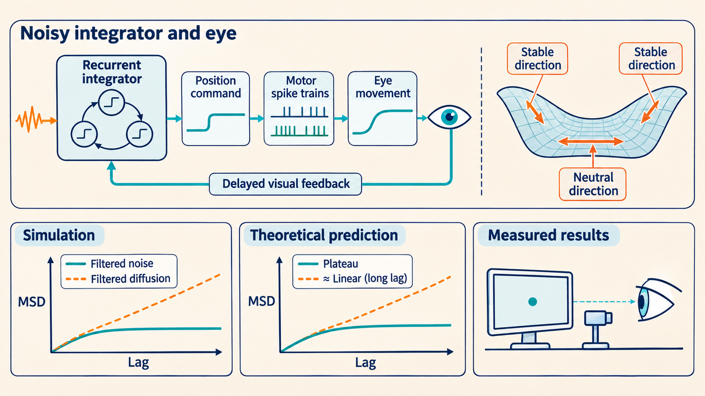
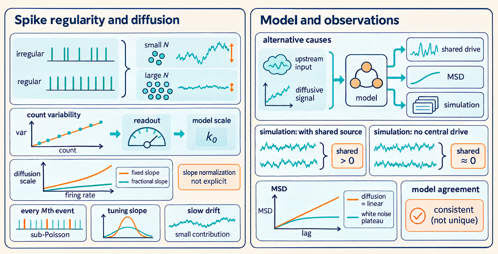
9.1 A noisy integrator can reproduce drift after muscle filtering
The recording analysis places much of the drive upstream of OMNs. To test whether integrator noise could supply it, the authors build a model from a noisy memory circuit through to the eye. The model adapts an earlier goldfish integrator architecture to primate tuning and variability. The model has two groups of integrator neurons. One group fires more when the eye points farther right. The other fires more when it points farther left. Neurons excite cells in their own group and inhibit cells in the other group. The connection strengths are tuned so that the circuit can approximately maintain a range of represented eye positions.1
For the right population, the model’s rate is
\[ \lambda_i^R(t)=\left[\zeta_i^R E_{OI}(t)+\lambda_i^0+\zeta_i^R F(t)\right]_+, \qquad [a]_+=\max(a,0). \]
\(E_{OI}\) is the internally represented position in degrees, \(\zeta_i^R\) is a tuning slope in spikes/(s deg), and \(\lambda_i^0\) is a rate offset in spikes/s. Taking the maximum with zero prevents negative firing. \(F\) is a feedback input in degrees, defined below. The matching left neuron has the opposite slope, \(\zeta_i^L=-\zeta_i^R\). In an active neuron, a change of one degree changes its rate by \(\zeta_i\).
The model scales each spike train into an input \(X_i\) with a saturating mean response. This input changes the neuron’s synaptic output \(S_i\), the lingering effect of its spikes on neurons receiving them. A weighted difference between the two groups’ synaptic outputs gives the represented eye angle \(E_{OI}\). This value sets the firing rates again, closing the feedback loop:
\[ \tau_s\dot S_i^R=-S_i^R+X_i^R,\qquad X_i^R(t)=\frac{\xi_i^R(t)}{\lambda_t+\lambda_i^R(t)},\qquad E_{OI}(t)=\sum_i\eta_i[S_i^R(t)-S_i^L(t)]. \]
Here \(\xi_i^R\) is a spike train generated at rate \(\lambda_i^R\), \(\tau_s\) is the synaptic decay time, and \(\lambda_t=60\) Hz sets the rate scale in the nonlinear synaptic response. Treating spikes as counts, \(X_i\) and \(S_i\) are dimensionless, and the weights \(\eta_i\) are in degrees. Between spikes, \(S_i\) decays exponentially. One spike adds a jump of \(1/[\tau_s(\lambda_t+\lambda_i^R)]\). Replacing spikes by their mean rate gives a drive \(\lambda_i^R/(\lambda_t+\lambda_i^R)\) that approaches one as the rate increases. This is the model’s saturating synaptic effect, rather than the purely linear synapses of the basic 2012 example.2
Persistence requires a further condition on that feedback. Set \(F=0\) and replace spikes by their mean rates. Define the mean saturated drives at a proposed stored value \(z\) by
\[ q_i^R(z)=\frac{\lambda_i^R(z)}{\lambda_t+\lambda_i^R(z)}, \qquad q_i^L(z)=\frac{\lambda_i^L(z)}{\lambda_t+\lambda_i^L(z)}. \]
Multiply each synaptic equation by its readout weight, subtract the left contribution, and sum. Since the same \(\tau_s\) applies to every unit, the readout obeys
\[ \tau_s\dot E_{OI}=-E_{OI}+G(E_{OI}), \qquad G(z)=\sum_i\eta_i[q_i^R(z)-q_i^L(z)]. \]
An exact continuum of persistent readout values would require \(G(z)=z\) over the represented range. For a small displacement from a fixed value, Taylor expansion gives
\[ \tau_s\,\frac{d\,\delta E_{OI}}{dt} =[G'(z)-1]\delta E_{OI}. \]
Here \(\delta E_{OI}\) is the small change in the represented eye angle, and \(G'(z)=dG/dz\) measures how much the feedback readout changes per degree of that angle. Thus \(G'(z)=1\) is the local neutral condition for the stored coordinate. Stable directions of the remaining synaptic state are also needed for an attractor. The weights were optimized to approximate the fixed-point relation across \(-50\) to \(50\) degrees. Residual mismatch can produce deterministic drift, so this finite optimized circuit provides approximate persistence rather than an exactly neutral continuum. The tuning slopes and thresholds were sampled to match reported macaque relationships and variation. With spikes, perturbations along the nearly neutral direction also accumulate. This reduction is a teaching derivation from the paper’s equations. Figure 4 separates the resulting internal diffusion from later muscle smoothing.3
Original paper figure: Ben-Shushan et al. (2022), Figure 4
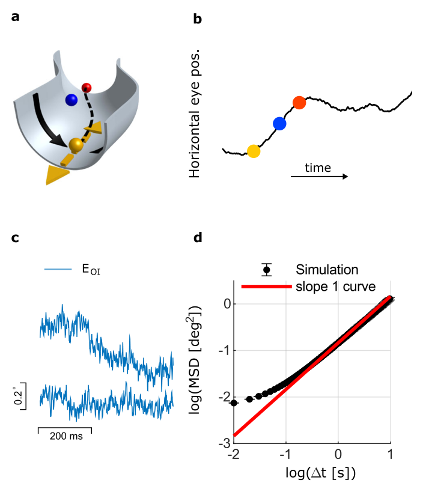

The motor neurons receive this position signal:
\[ \lambda_i^M(t)=[k_i(E_{OI}(t)-E_{T_i})]_+, \qquad \tau_{MN}\dot s_i^M=-s_i^M+\xi_i^M. \]
\(\lambda_i^M\) is a motor rate in spikes/s and \(E_{T_i}\) is that neuron’s position threshold in degrees. Its position sensitivity \(k_i\) is the change in firing rate per degree of represented position while the unit is active. \(\xi_i^M\) is its generated spike train. The filtered output \(s_i^M\) also has units spikes/s, with decay time \(\tau_{MN}\). One spike makes a jump of \(1/\tau_{MN}\). At constant mean rate, the mean output is that rate.
Each motor unit’s muscle and plant response is represented by a position contribution \(E_i\) satisfying
\[ s_i^M=k_i(E_i-E_{T_i})+r_i\dot E_i+m_i\ddot E_i, \qquad E=\frac1{N_m}\sum_{i=1}^{N_m}E_i. \]
These are Eqs. 28–31. Here \(E_i\) is motor unit \(i\)’s position contribution, \(N_m\) is the number of motor neurons being averaged, and \(E\) is their model eye position. The coefficient \(r_i\) sets the rate response to velocity and \(m_i\) the response to acceleration; dots denote time derivatives. The second order equation uses the same roles and units as the forward fit. At constant \(E_{OI}\), an active unit has mean \(s_i^M=k_i(E_{OI}-E_{T_i})\), giving mean \(E_i=E_{OI}\) when derivatives vanish. Averaging therefore transmits the common position while reducing independent private fluctuations. This is an effective model of combined motor output, not a claim that one motor unit moves an isolated eye of its own.4
The model used diverse thresholds and response coefficients, with motor thresholds sampled between \(-45\) and \(-5\) degrees, and imposed \(m_i<r_i^2/(4k_i)\) to give nonoscillatory individual response kernels. Main Methods report \(N=30{,}000\) integrator neurons, \(N_m=1{,}000\) OMNs, and \(\tau_s=20\) ms for the main full simulation. The separate private OMN comparison in Fig. 3 used 2,000 OMNs. These neuron counts belong to different simulation comparisons.5
As the eye moves while viewing a stationary target, the target’s image moves across the retina. The authors assume that visual feedback responds to this recent image motion rather than to an absolute target-position error. Their delayed feedback model is:
\[ F(t)=A[E(t-\tau_d)-E_{OI}(t)], \qquad \tau_d\simeq70\ \text{ms}. \]
Both positions are in degrees, so \(A\) is dimensionless in this formulation. The main value is \(A=0.015\). If gaze and its internal representation have recently moved rightward, the delayed position is to their left, making \(F\) negative. Its contribution to the integrator rates then opposes continued rightward movement. For a slowly varying position that the eye tracks, \(E(t-\tau_d)-E_{OI}(t)\simeq-\tau_d\dot E(t)\), showing the velocity-like action and sign. The approximation requires tracking and slow change over the delay.6
The effect on the ongoing MSD must be checked from the coupled model, rather than inferred from the delay alone. A short MSD lag is a separation between two samples in a running process, not the time since a new perturbation. Past measurements can already affect both samples, and \(F\) also contains the immediate term \(-A E_{OI}(t)\). Extended Data Fig. 3 compares the model with and without feedback: feedback changes amplitude across lags, while its larger effect on logarithmic slope occurs at longer lags. Figure 5 shows the full model. Muscle filtering supplies the short-lag smoothness, and feedback improves the detailed longer-lag fit. These are results of this model comparison, not a hard delay-based cutoff or a claim excluding visual control under other tasks.7
Original paper figure: Ben-Shushan et al. (2022), Figure 5
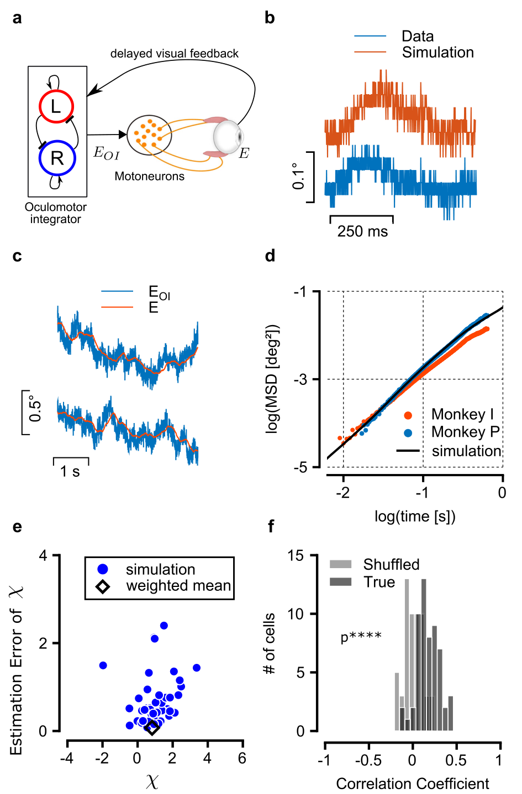

Original paper figure: Ben-Shushan et al. (2022), Extended Data Figure 3
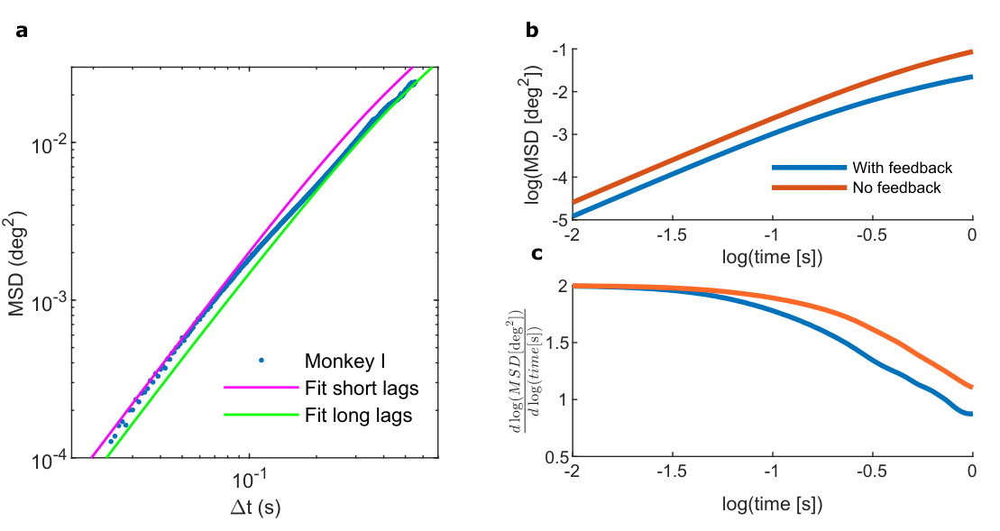

9.2 Spike regularity and circuit parameters set the model’s drift scale
The paper states its network-scale comparison as
\[ D\propto\frac{\mathrm{CV}^2}{N\lambda_0 k_0^2\tau_s^2}. \]
Here \(D\) is the internal eye-position diffusion coefficient, \(N\) the number of integrator neurons, \(\mathrm{CV}\) their interspike-interval coefficient of variation, \(\lambda_0\) a typical firing rate, \(k_0\) a typical position sensitivity, meaning how much the firing response changes for a change in represented position, and \(\tau_s\) the synaptic time constant. This is a scaling relation, not an exact prediction for every network. The paper does not specify a fractional normalization for \(k_0\); the calculation below explains why that detail matters when comparing changes in firing rate. See paper, Eq. 1, PDF p. 6.
[Derivation: the scaling and sensitivity] The following simplified calculation makes the rate and sensitivity dependence explicit. For \(N\) similar independent neurons with rate \(\lambda_0\) and absolute position slope \(a=d\lambda/dE\), the Poisson information rate is \(J\simeq Na^2/\lambda_0\). For a stationary renewal spike train observed for a long window \(L\), the count variance is approximately \(\lambda_0L\,\mathrm{CV}^2\). Using the information–diffusion relation as a scale for comparable network geometry gives
\[ D\ \propto\ \frac{\mathrm{CV}^2}{\tau_s^2J} \simeq\frac{\mathrm{CV}^2\lambda_0}{N a^2\tau_s^2}. \]
With the fractional slope \(b=a/\lambda_0\), this becomes \(D\propto\mathrm{CV}^2/(N\lambda_0 b^2\tau_s^2)\). It has the paper’s printed dependence if \(k_0\) means this fractional slope, but the paper does not state that normalization. This is an approximate scale calculation, not an exact derivation of the full model with saturating synapses and sub-Poisson spikes. The next steps show the count-variance and information calculations.
An agreement in amplitude is informative only if we know how much freedom the model has. The paper uses regular spike trains. The spike variability section defined the interspike interval coefficient of variation (CV) as the interval standard deviation divided by its mean. A Poisson process at constant rate has CV one. The model uses about 0.22 for integrator neurons and about 0.07 for OMNs. Such firing is called sub-Poisson spiking here because its long window count variability is lower than a Poisson process at the same rate, under the interval construction used in the model.8
The construction starts with a Poisson process at \(M\) times the desired rate and retains every \(M\)th spike. At constant rate, a retained interval is the sum of \(M\) independent exponential intervals. Each initial interval has mean \(1/(M\lambda)\) and variance \(1/(M\lambda)^2\). The retained interval therefore has mean \(1/\lambda\), variance \(1/(M\lambda^2)\), and CV \(1/\sqrt M\). This preserves the mean rate while reducing variability. Its use at changing rates is part of the model. The simple interval derivation assumes a constant rate.
At constant rate, the retained intervals are independent. This is a renewal process, a spike process whose successive intervals are independent and identically distributed. Let their mean be \(\mu=1/\lambda\) and standard deviation \(\sigma_I\). The time to \(n\) spikes has variance \(n\sigma_I^2\). For a long fixed window \(L\simeq n\mu\), a fluctuation in total interval time produces the opposite fluctuation in count divided by \(\mu\). Thus
\[ \operatorname{Var}(n)\simeq\frac{n\sigma_I^2}{\mu^2} \simeq\lambda L\left(\frac{\sigma_I}{\mu}\right)^2 =\lambda L\,\mathrm{CV}^2. \]
This explains why the diffusion scale contains CV squared: it is the strength of the accumulated spike fluctuations relative to the Poisson case. The diffusion calculation and information bound show how projecting those fluctuations onto a neutral memory direction adds a factor proportional to \(1/\tau_s^2\) and, for a comparable independent population, \(1/N\).
Rate and sensitivity need more care. Write the absolute local rate slope as \(a=d\lambda/dE\), in spikes/(s deg). For a scale estimate, first use the simpler Poisson model with linear synapses. If \(N\) similar cells fire near rate \(\lambda_0\), their Poisson information per unit time about position is
\[ J\simeq\frac{Na^2}{\lambda_0}. \]
Using the information-diffusion relation as a scale, including the \(\mathrm{CV}^2\) factor just derived and holding the network geometry fixed,
\[ D\ \propto\ \frac{\mathrm{CV}^2}{\tau_s^2J} =\frac{\mathrm{CV}^2\lambda_0}{N a^2\tau_s^2}. \]
If instead sensitivity is expressed as the fractional slope \(b=a/\lambda_0\), in inverse degrees, the same expression becomes
\[ D\ \propto\ \frac{\mathrm{CV}^2}{N\lambda_0 b^2\tau_s^2}. \]
This second form has the dependence printed in the paper’s Eq. 1, \(D\propto\mathrm{CV}^2N^{-1}\lambda_0^{-1}k_0^{-2}\tau_s^{-2}\). However, its surrounding text calls \(k_0\) position sensitivity without specifying fractional normalization. If it means the absolute slope in Hz/degree, the Poisson estimate above instead puts \(\lambda_0\) in the numerator at fixed slope. The printed inverse-rate dependence matches a fractional slope. The printed expression is a proportionality, so an omitted factor can carry units; units alone do not establish a printing error. This calculation is a scale estimate under fixed network geometry. The full 2022 model has saturating synapses and sub-Poisson spike trains, so inserting CV squared into the simpler Poisson relation does not give an exact formula for that network.9
Within this scale estimate, at fixed network geometry and under the noise assumptions above:
- Doubling \(N\) halves it.
- Doubling CV multiplies it by four.
- Doubling \(\tau_s\) divides it by four.
- Doubling the absolute slope at fixed rate also divides it by four.
Increasing rate reduces diffusion when the fractional slope is fixed, because more spikes then also supply a proportionally steeper absolute slope. Increasing rate at fixed absolute slope is a different comparison and increases the scale in the first formula. A rate change alone does not specify which comparison is intended.
Could the measured CV itself mostly reflect drift rather than private spike variability? Supplementary Notes test this. Let \(\lambda(t)=\bar\lambda+aB(t)\) during a fixation of length \(T\), with the rate changes small relative to \(\bar\lambda\). Here \(\bar\lambda\) is the baseline rate, \(a\) its change per unit eye position, and \(B(t)\) the Brownian position displacement, with \(\mathbb E[B(t)^2]=2Dt\). Write \(\bar B=T^{-1}\int_0^T B(t)\,dt\) for its mean within that fixation. For a Brownian path starting at zero, the expected time averaged squared position is \(DT\), and the expected squared time mean is \(2DT/3\). Subtracting gives the expected within-segment position variance \(DT/3=2DT/6\):
\[ \mathbb E\!\left[\frac1T\int_0^T(B(t)-\bar B)^2dt\right] =\frac{DT}{3}. \]
The second term follows from \(\mathbb E[B(t)B(s)]=2D\min(t,s)\) and \(T^{-2}\int_0^T\int_0^T2D\min(t,s)\,dt\,ds=2DT/3\). Expanding \(1/(\bar\lambda+aB)\) to first order gives \(1/\bar\lambda-aB/\bar\lambda^2\). Dividing its standard deviation by its mean then gives
\[ \mathrm{CV}_{\rm drift}\simeq \frac{|a|}{\bar\lambda}\sqrt{\frac{2DT}{6}}. \]
With the supplement’s values \(a=1/15\) spikes/(s arcmin), \(2D=100\) arcmin\(^2\)/s, \(T=0.5\) s, and \(\bar\lambda=80\) Hz, this is about \(0.0024\), well below the OMN CV near 0.07. These are an order of magnitude check, not a fitted diffusion constant for the whole model. Since one degree is 60 arcmin, that \(2D\) equals \(0.0278\) deg\(^2\)/s, or \(D=0.0139\) deg\(^2\)/s.10
9.3 The figures test shared drive, diffusion, and the full circuit model
The five figures address different steps. Their agreement is easier to assess when those questions remain separate.
| Figure | What to read | What it establishes or checks |
|---|---|---|
| 1, main p. 3 | Start with the large movement, then the expanded fixation. Compare the small predicted rate change with the larger observed fluctuation in b. Read c as one cell and d as the population. | A weak, positive rate relationship exists during fixation. The large movement is used for calibration. |
| 2, main p. 4 | The spike response kernel in a has a delay and two decay times; b shows their spread. In c, a noisy cell prediction can coexist with a smooth eye trace. Panel d plots \(R\), while e–f plot \(\chi\) and estimation error. | Shared movement and a model-based fraction of common variance. The vertical axis in f is error in \(\chi\), not eye position or another variance fraction. Large error cells receive little weight. |
| 3, main p. 6 | In a, distinguish the raw MSD, plateau estimate, and corrected curve. In b, compare both height and slope. Translating the private-noise curve upward does not remove its flattening. | Independent filtered motor noise fails both the amplitude and time dependence comparison. The noise subtraction is part of this evidence. |
| 4, main p. 7 | The valley in a sketches stable directions across the attractor and a neutral direction along it. It is not a measured energy function of this brain circuit. Panels c–d show simulated internal drift and its nearly linear MSD. | The mechanism by which neural noise can accumulate into an ordinary diffusive position signal. This is the integrator output before the full observation process. |
| 5, main p. 8 | Trace integrator, OMNs, plant, and feedback in a. Compare internal and actual position in c, then model and data MSD in d. Panels e–f rerun the statistical analysis on simulated recordings. | The full model can match filtered motion, and known simulated sources can produce noisy individual estimates with a useful population estimate. This checks the method under that model, rather than proving a unique biological source. |
The most useful supplemental comparisons are Extended Data Fig. 1 for individual uncertainty, Fig. 2 for noise subtraction and its simulated control, Fig. 3 for feedback, Fig. 4 for a no-central-drive control, and Fig. 5 for the other monkey’s fit. In the no-central-drive control, \(\widehat\chi=-0.09\pm0.22\) is compatible with zero. That negative estimate is sampling variation. Figures 6–8 document cell classification, segment sampling, and a rank correlation check. The Spearman correlation used in Figure 8 replaces each set of measured values by their ranks before computing correlation. It checks whether larger predicted displacements tend to accompany larger recorded displacements, without requiring the relationship to be linear. Figure 9 shows the heterogeneous model parameters. Figure 10 separates spiking noise passed directly to the output from spiking noise that drives diffusion inside the integrator: internal stochastic spikes remain in the latter comparison. Its caption reports little direct output-noise effect beyond 50 ms.11
Original paper figure: Ben-Shushan et al. (2022), Extended Data Figure 1
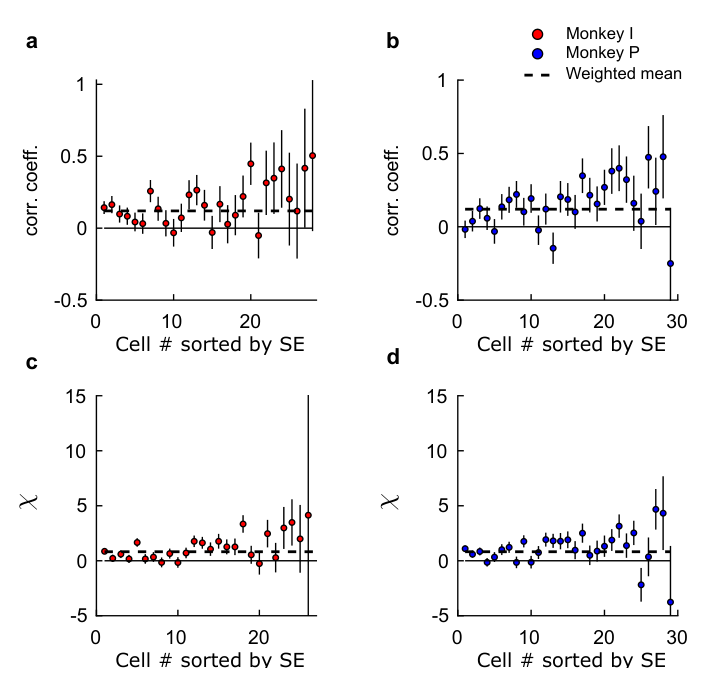

Original paper figure: Ben-Shushan et al. (2022), Extended Data Figure 4
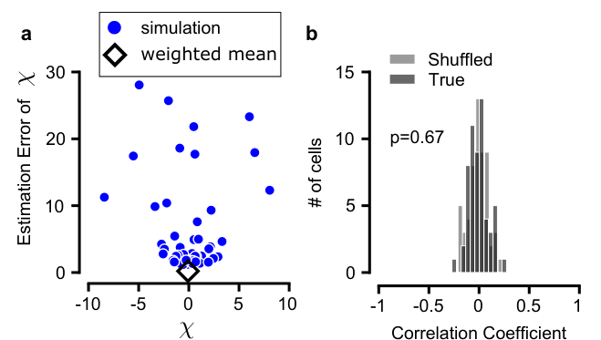

Original paper figure: Ben-Shushan et al. (2022), Extended Data Figure 5
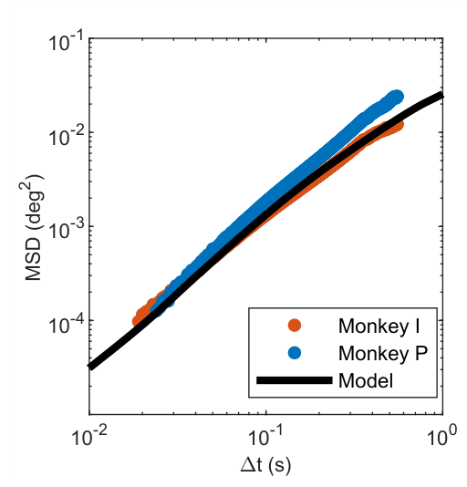

Original paper figure: Ben-Shushan et al. (2022), Extended Data Figure 8
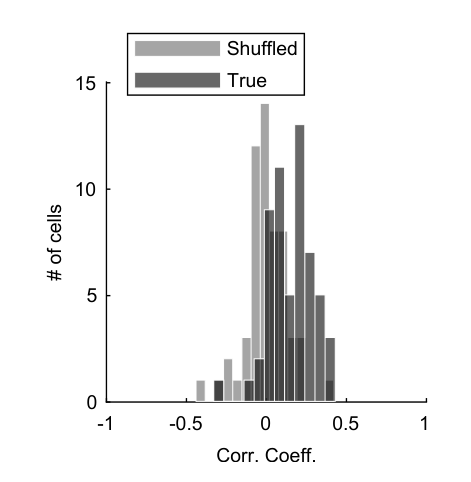

Original paper figure: Ben-Shushan et al. (2022), Extended Data Figure 9
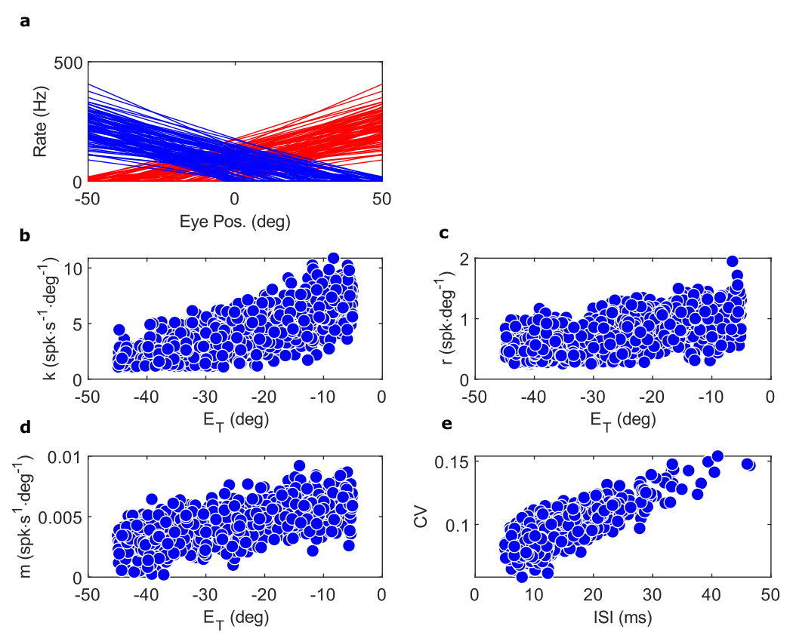

Original paper figure: Ben-Shushan et al. (2022), Extended Data Figure 10
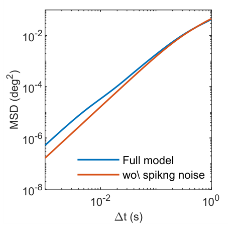

9.4 The evidence places shared drive upstream without identifying one circuit
The data and model answer different questions about where the drive originates:
- The common variance estimate supports a drive upstream of OMNs, given the calibration and noise assumptions.
- The MSD comparison supports a command that accumulates variation over the measured interval, rather than stationary white noise passed through a decaying muscle filter.
- The circuit model shows that integrator noise with plausible parameters can generate such a command and explain its filtered amplitude and timing.
Those results do not uniquely locate the noise inside integrator neurons. Two missing tests limit that conclusion:
- No integrator neurons were recorded in this study.
- No selective change of that circuit tested whether it was necessary for drift.
Noisy inputs to the integrator, or an already diffusive upstream signal, remain possible. The authors make this distinction in the Discussion and explicitly in their peer review response. Several combinations of neuron count, variability, and synaptic time constant can also fit an amplitude, so matching one curve does not uniquely recover those parameters.12
The study’s empirical scope is horizontal motion during these fixation segments in two animals. Visual tasks, feedback, and other sources of input can alter the statistics. Its contribution to the connection with the 2012 theory is more precise: a continuous memory can diffuse internally, while a mechanical output of that memory looks smooth and superdiffusive at shorter lags. To compare a memory theory with behavior, the mapping from stored value to measured movement is part of the calculation.
Ben-Shushan, N., Shaham, N., Joshua, M., & Burak, Y. (2022). Fixational drift is driven by diffusive dynamics in central neural circuitry. Nature Communications, 13, 1697. DOI. Main pp. 10–11, “Oculomotor integrator network,” Eqs. 23–27; Supplementary Information, p. 13, Extended Data Fig. 9. ↩︎
Ben-Shushan, N., Shaham, N., Joshua, M., & Burak, Y. (2022). Fixational drift is driven by diffusive dynamics in central neural circuitry. Nature Communications, 13, 1697. DOI. Main pp. 10–11, “Oculomotor integrator network,” Eqs. 23–27; Supplementary Information, p. 13, Extended Data Fig. 9. ↩︎
Ben-Shushan, N., Shaham, N., Joshua, M., & Burak, Y. (2022). Fixational drift is driven by diffusive dynamics in central neural circuitry. Nature Communications, 13, 1697. DOI. Main pp. 10–11, “Oculomotor integrator network,” Eqs. 23–27; Supplementary Information, p. 13, Extended Data Fig. 9. ↩︎
Ben-Shushan, N., Shaham, N., Joshua, M., & Burak, Y. (2022). Fixational drift is driven by diffusive dynamics in central neural circuitry. Nature Communications, 13, 1697. DOI. Main p. 11, “OMN activity and actual eye position,” Eqs. 28–33 and simulation parameters; p. 6, Fig. 3 caption, private OMN comparison. ↩︎
Ben-Shushan, N., Shaham, N., Joshua, M., & Burak, Y. (2022). Fixational drift is driven by diffusive dynamics in central neural circuitry. Nature Communications, 13, 1697. DOI. Main p. 11, “OMN activity and actual eye position,” Eqs. 28–33 and simulation parameters; p. 6, Fig. 3 caption, private OMN comparison. ↩︎
Ben-Shushan, N., Shaham, N., Joshua, M., & Burak, Y. (2022). Fixational drift is driven by diffusive dynamics in central neural circuitry. Nature Communications, 13, 1697. DOI. Main pp. 7, 9, 11, “Visual feedback,” Eq. 34; Supplementary Information, pp. 4–5 and p. 9, Extended Data Fig. 3. Some supplement cross references use earlier figure/equation numbers. Page 5 also mentions 15K integrator neurons, whereas final main Methods specify 30,000. Here we use final main paper numbering and its main simulation parameters. ↩︎
Ben-Shushan, N., Shaham, N., Joshua, M., & Burak, Y. (2022). Fixational drift is driven by diffusive dynamics in central neural circuitry. Nature Communications, 13, 1697. DOI. Main pp. 7, 9, 11, “Visual feedback,” Eq. 34; Supplementary Information, pp. 4–5 and p. 9, Extended Data Fig. 3. Some supplement cross references use earlier figure/equation numbers. Page 5 also mentions 15K integrator neurons, whereas final main Methods specify 30,000. Here we use final main paper numbering and its main simulation parameters. ↩︎
Ben-Shushan, N., Shaham, N., Joshua, M., & Burak, Y. (2022). Fixational drift is driven by diffusive dynamics in central neural circuitry. Nature Communications, 13, 1697. DOI. Main p. 11, “Sub-Poisson spike trains,” Eq. 35 and integrator variability specification. The interval-sum derivation expands the construction given there.↩︎
Ben-Shushan, N., Shaham, N., Joshua, M., & Burak, Y. (2022). Fixational drift is driven by diffusive dynamics in central neural circuitry. Nature Communications, 13, 1697. DOI. Main p. 6, Eq. 1 and its parameter discussion; peer review file, p. 23, changes in slope, synaptic time constant, and neuron count. The absolute versus fractional slope distinction is a comparison developed here with the simpler linear Poisson model. Synaptic saturation and the model’s sub-Poisson construction limit its transfer to the full 2022 network; a dimensional proportionality factor also prevents units alone from establishing a printing error.↩︎
Ben-Shushan, N., Shaham, N., Joshua, M., & Burak, Y. (2022). Fixational drift is driven by diffusive dynamics in central neural circuitry. Nature Communications, 13, 1697. DOI. Supplementary Information, pp. 2–3, “Contribution of oculomotor state to the CV of OMNs,” Eqs. S3–S6. Intermediate covariance integrals and numerical evaluation are expanded here. ↩︎
Ben-Shushan, N., Shaham, N., Joshua, M., & Burak, Y. (2022). Fixational drift is driven by diffusive dynamics in central neural circuitry. Nature Communications, 13, 1697, Supplementary Information, pp. 7–14, Extended Data Figs. 1–10. DOI. The no-central-drive result is Extended Data Fig. 4, p. 10. The output-noise comparison is Extended Data Fig. 10, p. 14. ↩︎
Ben-Shushan, N., Shaham, N., Joshua, M., & Burak, Y. (2022). Fixational drift is driven by diffusive dynamics in central neural circuitry. Nature Communications, 13, 1697. DOI. Main pp. 7, 9, Discussion; peer review file, pp. 12–13, distinction between recording-based upstream localization and the integrator hypothesis. ↩︎